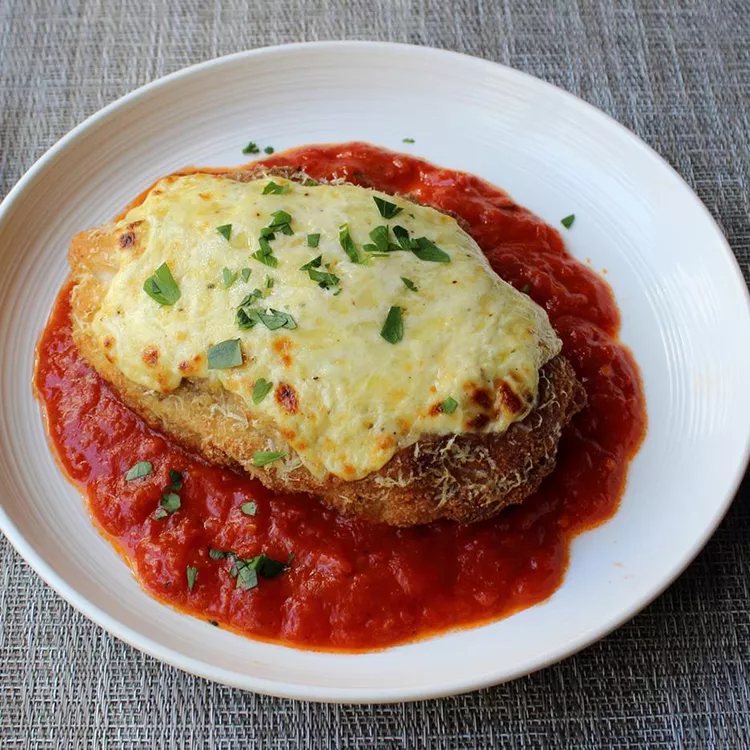

New & Improved Chicken Parmesan

Description
I love chicken parm, especially when it's made with fresh mozzarella, which it almost never is in restaurants. Of course, at home we can use the real stuff, but it can be pricey. So I tried something new--a cheese spread using ricotta fortified with sharp Cheddar.
Ingredients
- ½ teaspoon kosher salt
- 1 pinch ground black pepper
- 2 large skinless, boneless chicken breast halves
- ½ cup flour
- 1 egg, beaten
- ¾ cup dry bread crumbs
- ½ cup light olive oil for frying, or as needed
Steps
- Preheat oven to 500 degrees F (260 degrees C). Line a rimmed baking sheet with aluminum foil.
- Gently pound chicken breasts between 2 layers of plastic until each breast is evenly thick. Place breasts on a plate and season 1 side with kosher salt and black pepper. Sprinkle with flour; press flour to coat the entire surface and help it adhere. Turn and repeat on second side with salt, pepper, and flour.
- Heat 1/2 inch olive oil in a skillet over medium-high heat. Cook chicken until crispy and golden, 2 to 3 minutes per side. Transfer to prepared baking sheet.
- Mix ricotta and Cheddar cheese together in a bowl. Stir in salt, black pepper, cayenne, and olive oil. Spread half the cheese mixture on each breast without extending all the way to the edges. Dust with Parmigiano-Reggiano cheese and drizzle with olive oil.
- Mix ricotta and Cheddar cheese together in a bowl. Stir in salt, black pepper, cayenne, and olive oil. Spread half the cheese mixture on each breast without extending all the way to the edges. Dust with Parmigiano-Reggiano cheese and drizzle with olive oil.
- Bake on center rack of preheated oven until cheese is melted and chicken is no longer pink in the center and the juices run clear, 10 to 12 minutes. An instant-read thermometer inserted into the center should read at least 165 degrees F (74 degrees C).
- To serve, ladle the heated marinara sauce in a wide circle on warm plates. Place chicken in center and sprinkle with chopped parsley.
- To serve, ladle the heated marinara sauce in a wide circle on warm plates. Place chicken in center and sprinkle with chopped parsley.